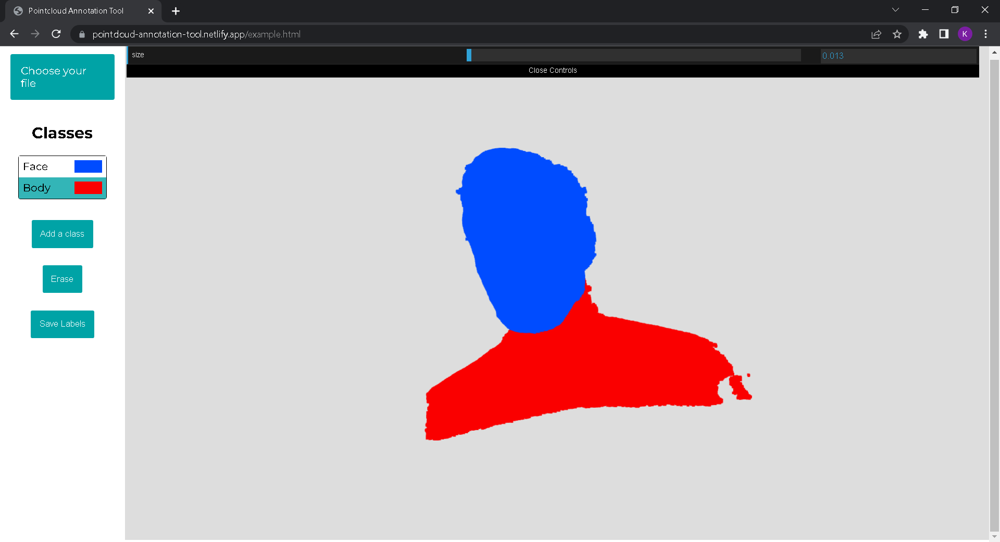

Pointcloud Annotation Tool
I created this tool to help me annotate point clouds during my internship at INRAE. It has been developed in JavaScript with the Three.js library, a library for creating and displaying 3D objects. To annotate a point cloud, we send a raycast from the mouse position on the screen. All points located at a certain distance from this raycast will be annotated.
 Try it See more on Github